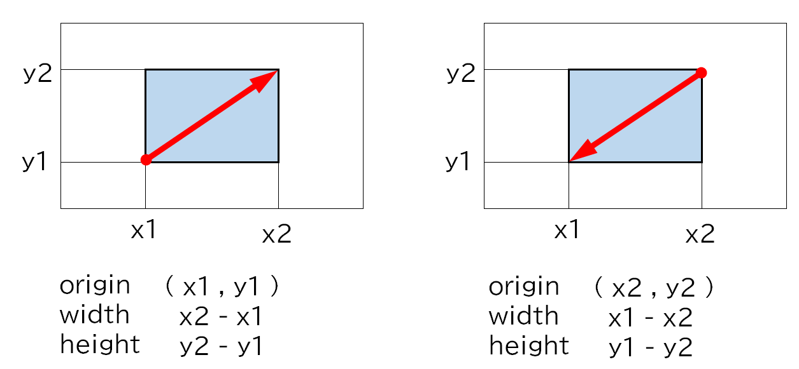

イメージを部分選択してコピー＆ペーストする
マウスのドラッグで矩形に囲んだ画像をペーストボードにコピーする
ビューにイメージファイルから読み込んだイメージが表示される。
マウスをクリックしながらドラッグすると始点と終点を対角線とした矩形が表示される。
コピーしたい部分を矩形に囲み、右クリックのコンテキストメニューから copy を選ぶ。これにより、ペーストボードにイメージオブジェクトがコピーされる。コピーしたイメージはペーストに対応しているアプリケーションに貼り付けることができる。
実装方法
イメージの表示方法は、「画像ファイルをビューに表示する方法」と同じで、グラフィックコンテキストにビットマップ画像（CGImageRef）を表示している。
マウスのドラッグにより矩形を描画する
矩形は形状は、マウスダウンの位置を始点、ドラッグ中のカーソルの位置またはマウスアップの位置を終点とした２点が対角の２点となる。形状のプロパティは、原点の位置及びサイズをCGRect構造体として保持する。始点から終点が、軸のマイナス方向となり、幅および高さがマイナス値になってもかまわない。

矩形は、CALayerオブジェクトとする
矩形の外観は、塗りつぶしは「透明」、枠線の色は「白」太さは「1ピクセル」を指定する。
マウスの移動ごとにCALayerオブジェクトの矩形を作成し、親ビューに追加する。このとき、CALayerオブジェクトを追加する前に、直前に追加した矩形オブジェクトを親ビューから削除（remove）する。これにより、マウスのドラッグに従い矩形がアニメーションのように拡大・縮小する。
プロパティ定義
mouseDownイベント
マウスボタンをクリックした位置を矩形の始点とする。
convertPointメソッドによりビューの原点からの座標が得られる。eventoの座標はウィンドウの原点からの座標になる。
mouseDraggedイベント
カーソルをドラッグした位置を矩形の終点とし、矩形イメージを描画するメソッドを呼ぶ。イベントが発生するたびに、位置を少しづつ変えた矩形が連続的に描画されるすることで、アニメーションのように見せることができる。
mouseUpイベント
マウスボタンを離した位置を矩形の始点とし、矩形イメージを描画するメソッドを呼ぶ。
矩形の描画
始点・終点の座標から、矩形の幅と高さを求め、始点を原点としたNSRect構造体を求める。これを元に矩形のNSBezierPathオブジェクトを作成する。
CAShapeLayerオブジェクトを作成し、上記NSBezierPathオブジェクトをpathに設定する。イメージの外観は、CAShapeLayerのプロパティに指定する。これを親ビューのレイヤーに追加する。
画像から指定した一部分を抜き出す
Core Graphics機能のCGImageCreateWithImageInRect関数を使用する。
第1引数に全体の画像イメージ（CGImageRef）、第2引数の rect に抜き出すイメージの位置と大きさを指定する。戻り値はCGImageRef型となる。これをNSImageオブジェクトに変換する。最後に、これをペーストボードに書き出す。
[重要] 矩形の原点とサイズの調整
ビューに表示されたビットマップ画像は、Core Graphicsの機能を使用して描画している。
Core Graphicsで表示される画像の座標系は左上が原点となる。また画像のサイズは、原点を起点に幅・高さとも正の数値で定義しなければならない。このため原点の変更とサイズの絶対値化を行う。
ビューに表示されている画像をマウスのドラッグで囲んだとき、ビューの四隅の外まで矩形を作った場合、はみ出した部分は除外する。
Tips
ウィンドウが非アクティブな状態でもマウスイベントを発生させる
ソースコード
カスタムビュークラス
UAView